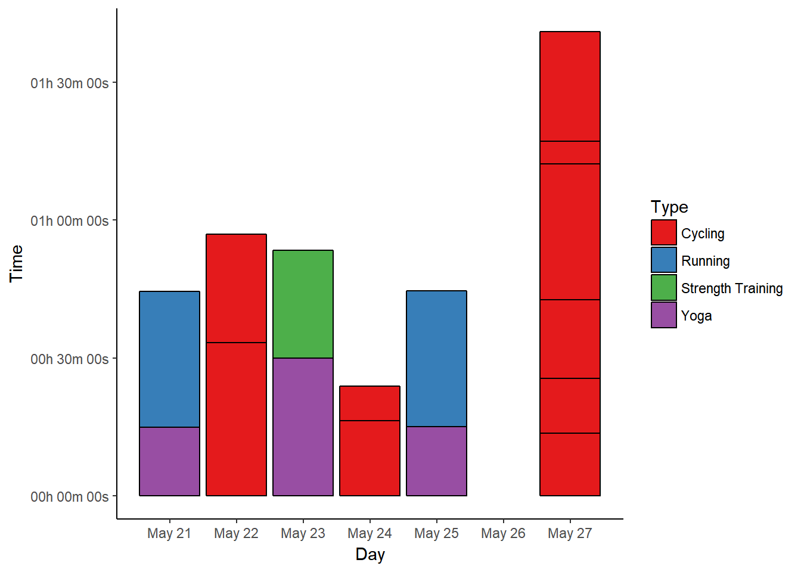
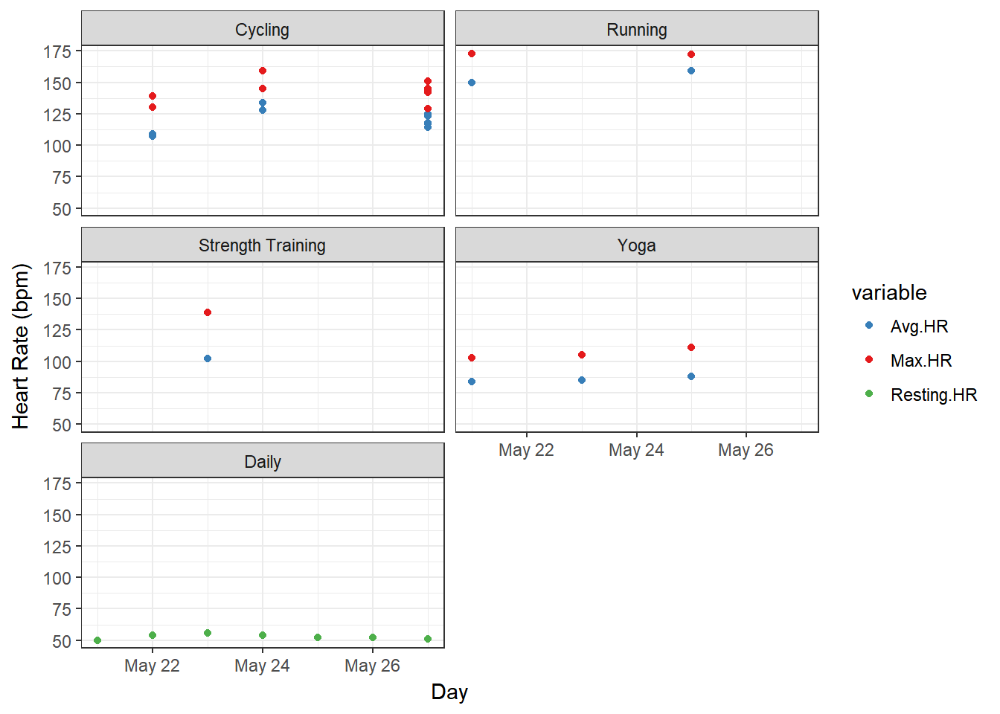
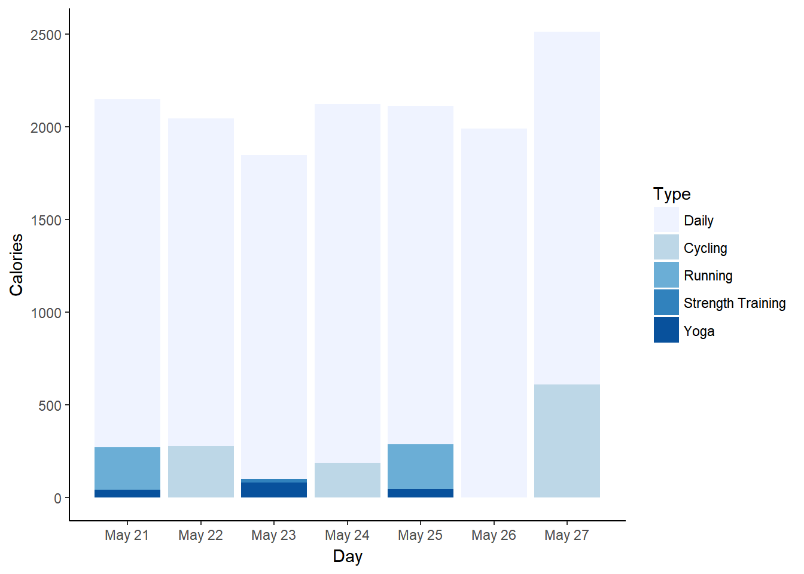
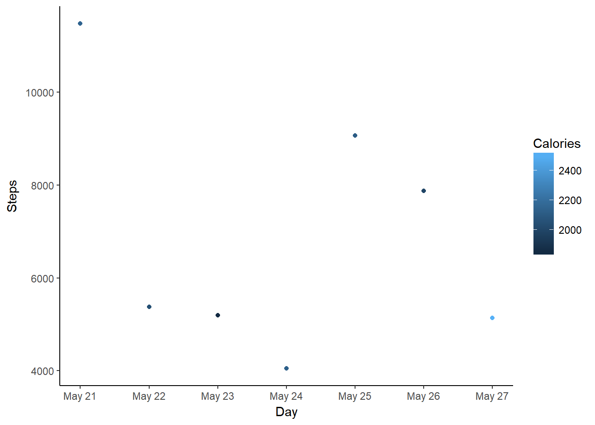

# read in data
data <- read.table("Week2.csv", header = TRUE, sep = ",", na.strings = c("NA",
"--", ""))
# convert time/date objects
data$Start <- as.POSIXct(data$Start, format = "%a, %d %B %Y %H:%M")
data$Time <- times(data$Time)
# remove morning exercise
dataf <- data[!data$Type == "Other", ]
# convert exercise type to factor and reorder for plotting
a <- recode(as.numeric(as.factor(dataf$Type)), "1=1; 2=5; 3=2; 4=3; 5=4")
dataf$Types <- reorder(dataf$Type, a)
# first look
summary(data)
datafMy week two data contains activities I tracked from May 21st to May 27th, again sorted into different types (cycling, running, etc.) together with relevant data, as well as some overall statistics for each day. Here is a table showing how much time I spent with each activity:
kable(ddply(dataf, .(Type), summarise, duration = sum(Time)), format = "html",
table.attr = "style='width:20%;'")| Type | duration |
|---|---|
| Cycling | 03:01:44 |
| Daily | NA |
| Running | 00:59:15 |
| Strength Training | 00:23:25 |
| Yoga | 00:59:59 |
I cycled a lot this week, since we were still on vacation and could do a lot with the bikes. Expect a drop in this statistic when I get back to work tomorrow…
I feel like I haven’t done enough strength training, just looking at these numbers. But then, a strength workout only has to last 15 minutes, and the way my body hurts it must have been enough. There’s always also moving stuff around, which costs strength and isn’t shown here at all.
Since workout duration is important for #SummerPain, I’m visualising it for each day with a bar chart.
# extract day from activity start
dataf$Day <- as.Date(dataf$Start)
# ignore daily data for plotting
datas <- subset(dataf, !Type == "Daily")
p1 <- ggplot(datas, aes(x = Day, y = Time, fill = Type)) + geom_bar(stat = "identity",
colour = "black") + scale_fill_brewer(palette = "Set1")
p1 <- p1 + scale_y_chron(labels = date_format("%Hh %Mm %Ss"))
p1 <- p1 + theme_classic() + scale_x_date(date_breaks = "1 day", date_labels = "%B %d")
p1
May 21st was a running day, and since we didn’t run early in the morning, we finished that workout with 15 minutes of “yoga for runners” to stretch.
May 22nd included a cycling trip into the city and back, which takes around 20 minutes to half an hour one way. I’m still not fully convinced I should call that cardio, since I didn’t sweat much or anything, but exercise is exercise…
May 23rd was strength training (15 minutes plus 5 minutes cardio warm-up) followed by half an hour of flexibility yoga, which was great.
On May 24th I cycled on my own, which means that I was faster - despite my taking some detours, I didn’t manage to get over the 30 min mark. On the other hand, it was definitely cardio, as you’ll see in the heart rate data.
We went running on May 25th, and again followed that with 15 minutes of stretching yoga.
May 26th was busy organising at the new flat, and since we had to bring heavy stuff we had to take the car. We built our first own work bench that day, but didn’t exercise.
And then there’s May 27th! :-D We cycled into the city to get inspiration for our small bathroom and had great salad for lunch (upper two blocks) before returning home (longest block). Then we cycled to our new flat to get some work done, cycled from there to a great Biergarten, and then home from there (lowest three blocks). For now, I’ll stick to counting one workout per day, but this day must be worth at least two.
In the overview, I’m showing my average and maximum heart rates per workout type as box plots for the different calendar weeks, but for weekly data I’ll stick to simple data points.
# melt HR data
HRdata <- melt(dataf, id.vars = c("Activity", "Types", "Day"), measure.vars = c("Avg.HR",
"Max.HR", "Resting.HR"))
p2 <- ggplot(data = HRdata, aes(x = Day, y = value, colour = variable)) + geom_point() +
scale_colour_manual(values = c("#377EB8", "#E41A1C", "#4DAF4A"))
p2 <- p2 + facet_wrap(~factor(Types), nrow = 3)
p2 <- p2 + theme_bw() + labs(y = "Heart Rate (bpm)")
p2
As expected, my average and maximum heart rates while cycling were higher on May 24th compared to May 21st (or even May 27th) - the difference between cycling for transportation and actually trying to convert cycling into exercise. I still didn’t reach the same HR as in running, but that’s fine.
I only did one strength workout this week, something I could improve on next week. Cardio was definitely enough, and despite the three yoga sessions I did, I feel sore enough to want more of that for relaxation…
The third metric I wanted to include is calorie burn, since I always think it’s interesting to know what difference exercise makes compared to a workout-free day.
# reorder types for this plot
b <- recode(as.numeric(as.factor(dataf$Types)), "1=2; 2=3; 3=4; 4=5; 5=1")
dataf$Types <- reorder(dataf$Type, b)
# sum up calories per exercise type per day
datac <- dcast(dataf, Day ~ Types, sum, value.var = "Calories")
datacm <- melt(datac, id.vars = "Day")
colnames(datacm) <- c("Day", "Type", "Calories")
p3 <- ggplot(datacm, aes(x = Day, y = Calories, fill = Type)) + geom_bar(stat = "identity",
position = "identity") + scale_fill_brewer()
p3 <- p3 + theme_classic() + scale_x_date(date_breaks = "1 day", date_labels = "%B %d")
p3
Not surprisingly, May 27th shows by far the highest calorie burn, while May 23rd - the day of the strength training - shows the lowest burn. Yoga burned surprisingly many calories on that day, but that’s probably due to the duration of the session. The two running days seem pretty equal, and I definitely burned more calories cycling this week than with any other exercise.
# subset for only daily data
datad <- dataf[dataf$Type == "Daily", ]
p4 <- ggplot(datad, aes(x = Day, y = Steps, colour = Calories)) + geom_point()
p4 <- p4 + theme_classic() + scale_x_date(date_breaks = "1 day", date_labels = "%B %d")
p4
This time, it’s pretty clear that my step count plays a role in my overall calorie burn on most days. May 22nd to May 24th were quite “lazy”, since I worked on this website and almost only moved for the actual workouts. Nevertheless, May 24th looks good despite the low step count - due to the cycling? That’s definitely the cause of the high calorie burn on May 27th, where I also didn’t walk much.
In summary - when counting cycling as one workout on any given day - I again completed six workouts in the second week of #SummerPain. This brings me up to 12/100 workouts as of May 27th.